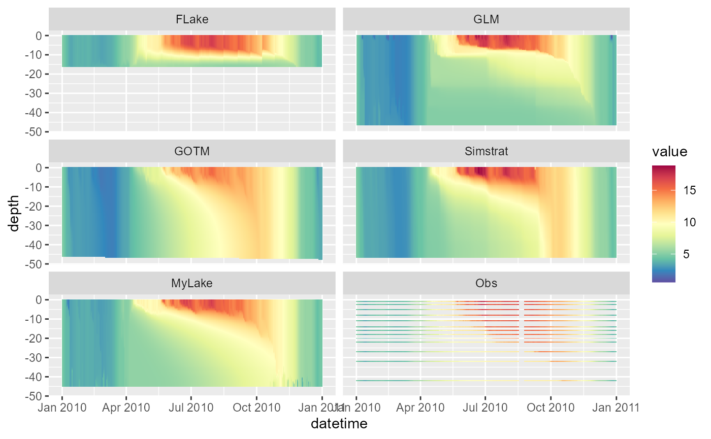
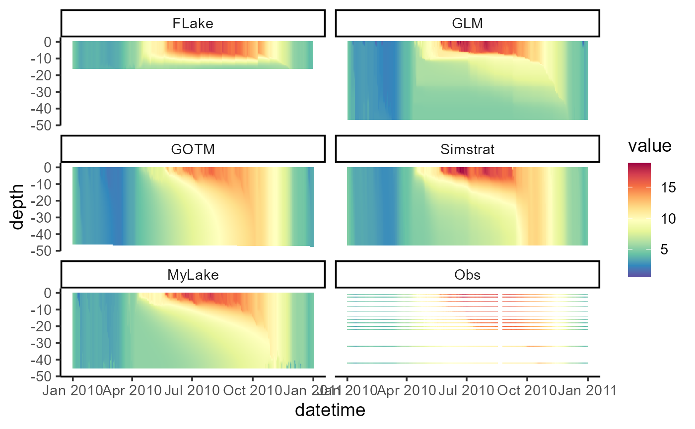

Once you have your hypsograph, water temperature observations and meteorological files prepared, running LakeEnsemblR is relatively straightforward.
Example model run
# Load LakeEnsemblR
library(LakeEnsemblR)
#>
#>
#> _ _ _____ _ _ ____
#> | | __ _| | _____| ____|_ __ ___ ___ _ __ ___ | |__ | | _ \
#> | | / _` | |/ / _ | _| | '_ \/ __|/ _ | '_ ` _ \| '_ \| | |_) |
#> | |__| (_| | | __| |___| | | \__ | __| | | | | | |_) | | _ <
#> |_____\__,_|_|\_\___|_____|_| |_|___/\___|_| |_| |_|_.__/|_|_| \_\
#>
#>
#> https://github.com/aemon-j/LakeEnsemblR
# Copy template folder
template_folder <- system.file("extdata/feeagh", package= "LakeEnsemblR")
dir.create("example") # Create example folder
file.copy(from = template_folder, to = "example", recursive = TRUE)
#> [1] TRUE
setwd("example/feeagh") # Change working directory to example folder
# Set config file & models
config_file <- "LakeEnsemblR.yaml"
model <- c("FLake", "GLM", "GOTM", "Simstrat", "MyLake")
# Example run
# 1. Export settings - creates directories with all model setups and exports settings from the LER configuration file
export_config(config_file = config_file, model = model)
#> depths wtemp
#> 1 0.9 4.977
#> 2 2.5 4.965
#> 3 5.0 4.953
#> 4 8.0 4.941
#> 5 11.0 4.883
#> 6 14.0 4.887
#> 7 16.0 4.877
#> 8 18.0 4.986
#> 9 20.0 4.960
#> 10 22.0 4.944
#> 11 27.0 4.980
#> 12 32.0 4.951
#> 13 42.0 4.905
# 2. Run ensemble lake models
run_ensemble(config_file = config_file, model = model)
#> [1] "Running MyLake from 01/01/10 to 01/01/11..."
#> user system elapsed
#> 17.45 0.53 18.45Post-processing
# Load libraries for post-processing
library(gotmtools)
#> Loading required package: rLakeAnalyzer
library(ggplot2)
## Plot model output using gotmtools/ggplot2
# Extract names of all the variables in netCDF
ncdf <- "output/ensemble_output.nc"
vars <- gotmtools::list_vars(ncdf)
vars # Print variables
#> [1] "temp" "ice_height" "w_level"
p1 <- plot_heatmap(ncdf)
#> Extracted temp from output/ensemble_output.nc
#> [,1]
#> short_name "temp"
#> units "degC"
#> dimensions "lon lat z model member"
p1
# Change the theme and increase text size for saving
p1 <- p1 +
theme_classic(base_size = 14) +
scale_colour_gradientn(limits = c(0, 21),
colours = rev(RColorBrewer::brewer.pal(11, "Spectral")))
p1